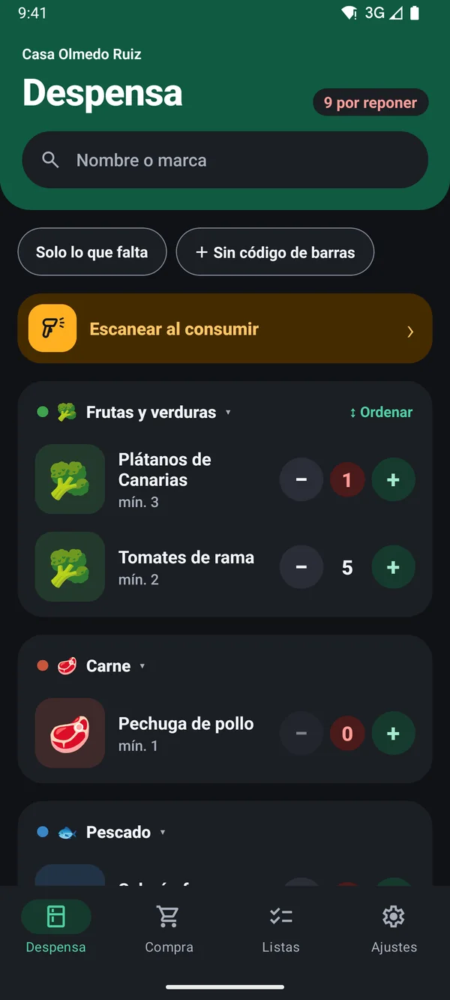
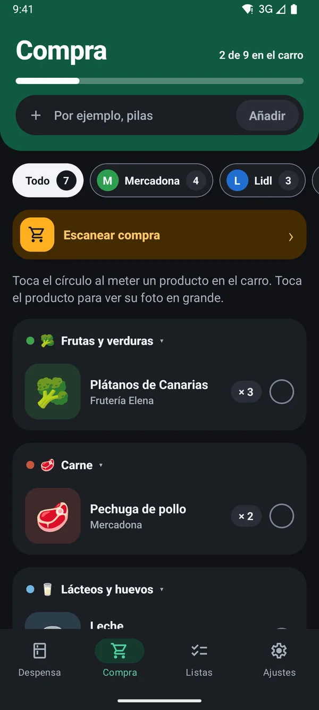
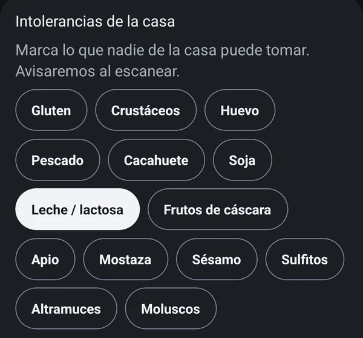
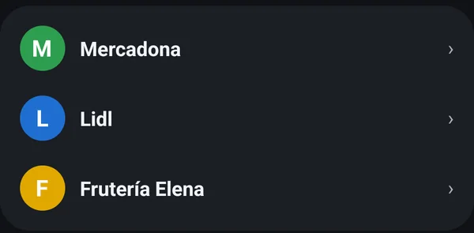

Toda la casa, al día
Cada móvil entra en la misma casa con un código. Lo que uno gasta, los demás lo ven al momento.
Escaneas lo que gastas y la lista de la compra se hace sola, compartida con toda la casa.
Nuevo Con Pro, una foto al ticket repone la despensaPróximamente en Android y iPhone
Versión 1.0.0




Al abrir el último paquete, apunta la cámara al código de barras. El stock baja solo y la ficha del producto se completa con su foto y sus alérgenos.
Cuando algo baja de su mínimo, pasa a la lista de la compra de toda la casa.
La lista se separa por supermercado y por familia. Toca el círculo al meter cada producto en el carro y la barra de arriba te dice cuánto te queda.
TuDespensa Pro
Vuelves del súper y no tienes que escanear producto a producto. La IA lee cada línea del ticket, la empareja con lo que ya tienes en casa y te propone reponerlo todo de golpe. Tú solo confirmas.
Desde la pestaña Compra: una foto del ticket de papel o el PDF del ticket digital.
La IA lo lee dos veces y comprueba que las líneas suman el total. Si algo no cuadra, lo repasa con un modelo más potente.
Lo que no tenías se crea como producto nuevo. Solo te pregunta cuando duda, y lo recuerda para el próximo ticket.
Cada móvil entra en la misma casa con un código. Lo que uno gasta, los demás lo ven al momento.
Marca lo que nadie puede tomar y te avisa al escanear un producto que lo lleve.


Ponles color o la foto de su cartel y separa la compra de cada uno.


Al escanear un producto nuevo, la app trae su foto, nombre y alérgenos de Open Food Facts. En las capturas verás iconos en su lugar: las fotos reales son de cada marca.
No hay publicidad ni seguimiento, y tus datos no se venden.
Detalles que se notan en la cocina y en el pasillo del súper.
Sigue el tema de tu móvil. Prueba los dos con el botón de arriba.
Pliega las familias que no te interesan y quédate solo con lo que vas a comprar.
Toca un producto de la lista y ves su foto a pantalla completa para encontrarlo.
"3 de 12 en el carro": sabes de un vistazo cuánto te falta para terminar.
Lo que compras de vez en cuando va en su propia sección, sin llevar stock.
Crea tus propias familias y arrastra los productos al orden de tu despensa.
Lo que escaneas en la tienda aparece en el carro y se cierra al terminar la compra.
Castellano, catalán e inglés. Cada móvil de la casa elige el suyo.
Las fotos y la lista se guardan en el móvil, también en el súper sin señal.
Todo lo que necesita una casa es gratis y sin anuncios. Pro te ahorra el escaneo después de cada compra.
0 €
Sin anuncios, sin límite de productos ni de móviles.
Prueba con 2 tickets
2,99 € al mes por casa
O 24,99 € al año, unos dos meses gratis. Lo paga una persona y lo disfruta toda la casa.
Muy pronto en Pro
Los precios y el gasto salen solo de los tickets que escanea tu casa: lo que compres sin escanear el ticket no cuenta. Cuantos más tickets escanees, más completo será. No los ponemos nosotros ni vienen de internet.
Sí. La despensa compartida, el escaneo, la lista de la compra automática, los supermercados y los avisos de alérgenos son gratis y sin anuncios. TuDespensa Pro es una suscripción opcional por casa que lee los tickets de la compra con IA.
Pro lee los tickets de la compra con IA, en foto o en PDF, y repone la despensa de golpe, hasta 20 tickets al mes. Cuesta 2,99 € al mes o 24,99 € al año por casa, y puedes probarlo gratis con 2 tickets. Lo paga una persona y lo disfruta toda la casa. Con los precios de esos tickets llegarán el historial de precios, el supermercado donde te sale más barato cada producto y el gasto de la casa. Solo cuenta lo que entra con un ticket escaneado, así que cuantos más tickets escanees, más completo será.
No te gasta ticket. Las lecturas fallidas no cuentan, hasta 5 al mes con Pro (o 5 en total durante la prueba gratis). Prueba con otra foto del ticket entero, plano y con buena luz.
No. La foto o el PDF se envían a la IA para leerlos y se descartan. Solo se guardan los productos repuestos y lo que pagaste por cada uno, dentro de tu casa.
Quien crea la casa recibe un código. El resto de la familia lo introduce en su móvil y entra en la misma casa: la despensa y la lista de la compra se actualizan en todos los móviles al momento.
No. Entras con tu correo y un código de 8 cifras que te llega por email, o con tu cuenta de Google.
Al escanear un código de barras nuevo, la app consulta Open Food Facts, una base de datos abierta de alimentos, y rellena el nombre, la foto y los alérgenos. Solo se envía el código de barras, nunca datos tuyos.
Sí. Marca en Ajustes lo que alguien de casa no puede tomar, como la leche o el gluten, y la app te avisa al escanear un producto que lo lleve y en la lista de la compra.
TuDespensa llegará primero a Android y, más adelante, a iPhone.
En castellano, catalán e inglés. Cada móvil de la casa puede elegir el suyo en Ajustes.
Familias, stock mínimo y un sistema que no dependa de la memoria de nadie.
Cómo dejar de comprar dos veces lo mismo y de olvidar lo que falta.
Tutorial con capturas: el escaneo al gastar y el stock mínimo.
Tutorial con capturas: el código de la casa y cómo entra cada móvil.
Tutorial con capturas: la lista por súper, el carro y terminar la compra.
Tutorial de TuDespensa Pro: del ticket a la despensa repuesta.
Tutorial de TuDespensa Pro: dudas, productos nuevos y unidades.
Tutorial de TuDespensa Pro: ticket entero, plano y con luz, o el PDF.
El precio, la prueba gratis con 2 tickets y los tickets al mes.
Solo guardamos lo necesario para que la despensa funcione, en servidores europeos y del Reino Unido.
Lee la política de privacidad